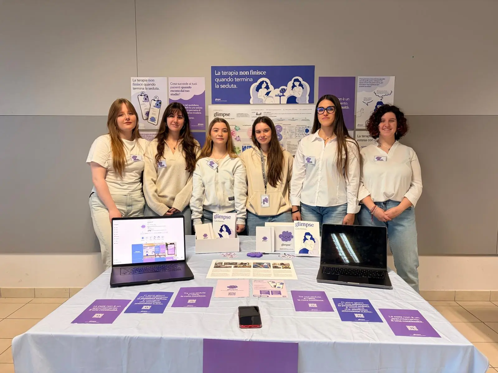
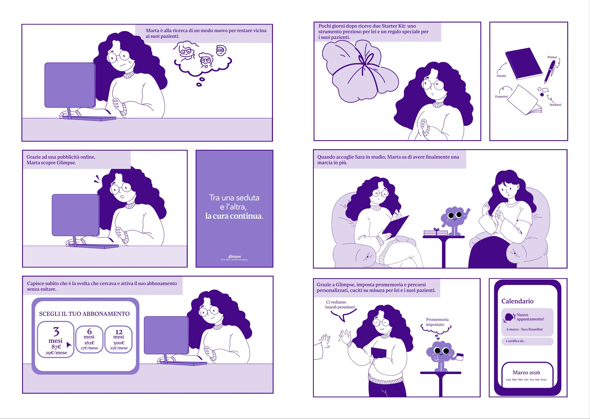
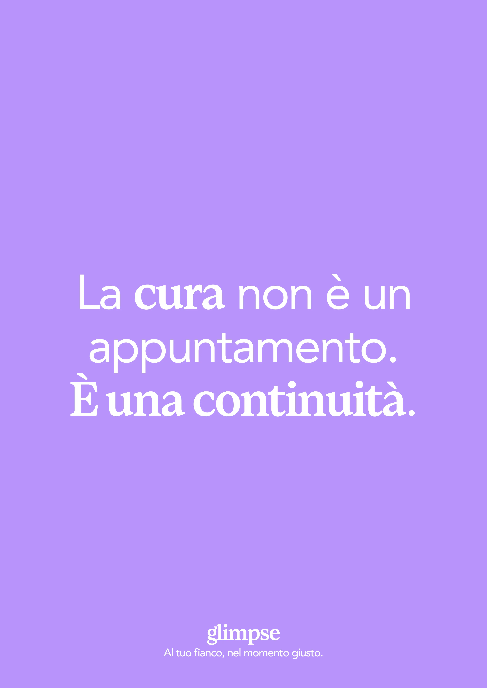
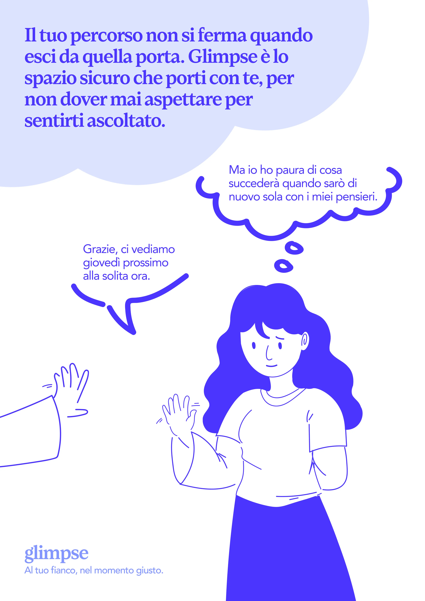
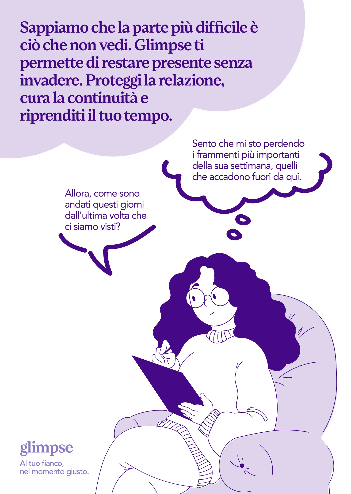
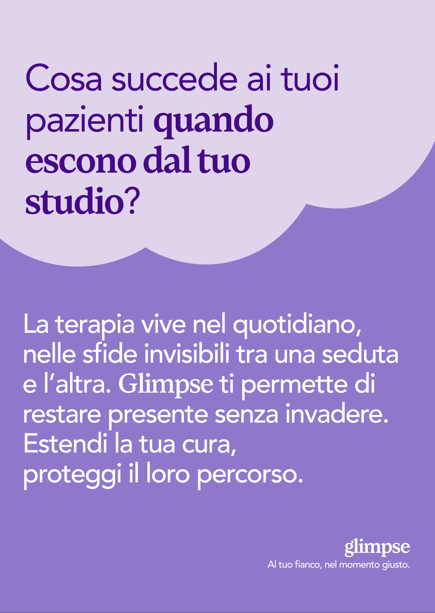

Glimpse is a digital platform designed to extend the therapeutic relationship beyond the confines of the session, offering ethical and ongoing support. We have designed this service to address moments of vulnerability for the patient, such as emotional crises or relapses, which often arise when they are not in direct contact with their therapist. Through the use of regulated artificial intelligence, Glimpse does not replace the therapist, but acts as a support infrastructure that ensures continuity, security and greater awareness throughout the treatment journey.






We have designed Glimpse to operate via an app that bridges everyday life and therapy. Patients can fill in a guided digital diary, where they note down emotions and thoughts that the AI organises into summaries readable by the practitioner. Within the ecosystem, we have also included ‘Glimpsy’, a virtual assistant that suggests specific therapeutic exercises, already approved by the therapist, offering practical help at the right moments without ever making independent clinical decisions.
When designing the service’s identity and interaction, we focused heavily on ethics and privacy. We chose to use non-generative AI, always subject to human oversight, to ensure that every piece of advice or exercise suggested is clinically sound and safe. This approach allows the practitioner to monitor the patient’s progress in real time, reducing the cognitive load and enabling more timely intervention during face-to-face sessions.
The end result is a model of digital psychotherapy that strengthens the bond between practitioner and patient. We sought to transform technology into a tool for responsible listening, capable of making the therapeutic process more fluid and present in everyday life. Glimpse thus represents a modern solution that protects the authenticity of the clinical relationship, whilst improving the quality of the information available for treatment.